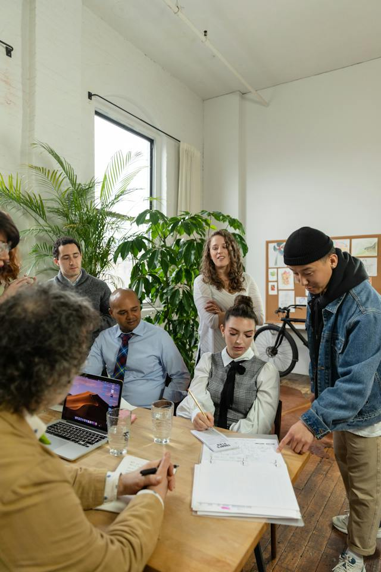

Nuestra historia


Hace más de una década, un grupo de apasionados viajeros decidió
convertir su amor por explorar el mundo en algo más que una pasión
personal. Así nació Cudi Turismo. Desde entonces, hemos estado
dedicados a compartir la belleza y la diversidad de nuestro país con
viajeros de todas partes del mundo. Lo que comenzó como un pequeño
negocio familiar ha crecido hasta convertirse en una agencia de
turismo líder en la región. Durante todos estos años, hemos
explorado cada rincón de Argentina, desde las majestuosas montañas
de los Andes hasta las playas doradas de la costa atlántica. Nuestra
pasión por el turismo sostenible y la autenticidad nos ha llevado a
descubrir experiencias únicas y a mostrar a nuestros clientes el
corazón de Argentina.
Nuestra Misión

Nuestra misión en Cudi Turismo es hacer que tus viajes sean inolvidables. Trabajamos
para brindarte experiencias auténticas y significativas en la hermosa provincia de
Córdoba. Queremos que
descubras la magia de nuestros destinos y te sientas parte de la cultura local mientras
exploras. Nuestro compromiso es ofrecerte momentos que perduren para siempre y
enriquezcan tu vida a través de los viajes.
Nuestra Visión
Nuestra visión en Cudi Turismo es convertirnos en la agencia de viajes de elección para quienes desean
descubrir Córdoba de manera auténtica. Nos esforzamos por ser líderes en la creación de experiencias únicas
que conecten a las personas con la belleza natural y cultural de nuestra región. Queremos ser reconocidos por
nuestro compromiso con la sostenibilidad y la excelencia en el servicio al cliente. En el futuro, aspiramos a
ser un referente en la industria del turismo, promoviendo un turismo responsable y enriquecedor en Córdoba.